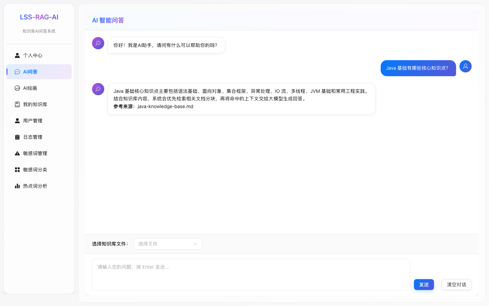

当前界面 docs/screenshots/03-ai-chat.png

本稿以“少即是清晰”为核心：减少容器嵌套，把上传、检索、问答、评测拆成更明确的工作区；保留 Element Plus 的工程可落地性，同时用更克制的色彩、毛玻璃、圆角、阴影和响应式布局提升亲和力。
从“表单和表格堆叠”调整为“任务驱动界面”：用户先看到当前工作、上下文和下一步动作，同时保留知识库手动选择，不让系统替用户做决定。
弱化大卡片套小卡片，用页面带区、工具栏和右侧面板组织内容。
主按钮只保留一个主动作，批量操作进入上下文工具栏。
知识库数量、召回质量、索引状态在页面内即时呈现。
桌面三栏在移动端变成顶栏、内容流、底部输入，不压缩核心操作。
左侧为现有截图，右侧为新版设计稿。新版把知识库选择从输入区上方移到上下文区，聊天区更像原生 macOS/iPadOS 助手体验。

知识库页面强调“上传 - 分块 - 索引 - 管理”的任务链；评测页面强调策略对比和结果可读性。
支持 PDF、Word、Markdown、Excel、Text。上传完成后自动分块并建立向量索引。
导航收进顶部入口，聊天输入固定在底部，知识库上下文以可展开抽屉呈现。